Santé des femmes
Informations essentielles sur le dépistage, la prévention et la détection précoce du cancer du col de l'utérus pour toutes les femmes, avec un accent particulier sur les communautés immigrées.
Informations sur le cancer du col de l'utérus
Choisissez un thème pour en savoir plus.
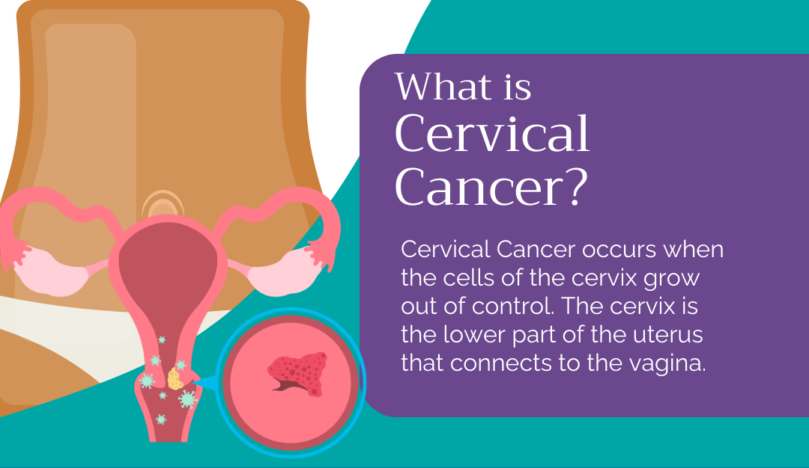
Gynecology icons created by juicy_fish - FlaticonQu'est-ce que le cancer du col de l'utérus ?
Le cancer du col de l'utérus se développe dans les cellules qui tapissent le col, généralement sur de nombreuses années et presque toujours à la suite d'une infection persistante par le HPV. Détecté tôt grâce à un dépistage régulier, c'est l'un des cancers les plus évitables et les plus faciles à traiter.
En savoir plus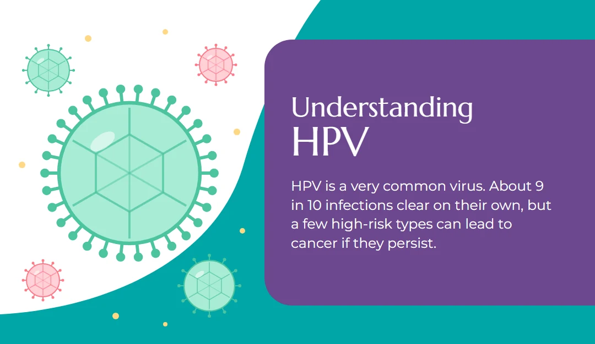
Gynecology icons created by juicy_fish - FlaticonComprendre le HPV
Le HPV est un virus extrêmement courant : la plupart des personnes sexuellement actives y sont exposées à un moment donné, et environ 9 infections sur 10 disparaissent d'elles-mêmes. Seul un petit groupe de types à haut risque peut conduire à un cancer si l'infection persiste pendant des années.
En savoir plus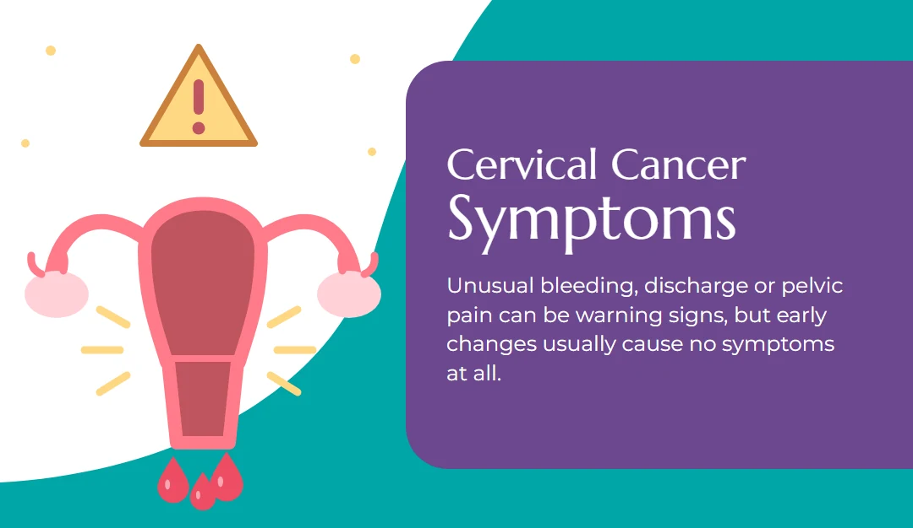
Gynecology icons created by juicy_fish - FlaticonSymptômes du cancer du col de l'utérus
Des saignements inhabituels, des pertes ou des douleurs pelviennes peuvent être des signes d'alerte, même si les premières modifications précancéreuses ne provoquent généralement aucun symptôme — c'est pourquoi le dépistage régulier est important même lorsque l'on se sent parfaitement bien.
En savoir plus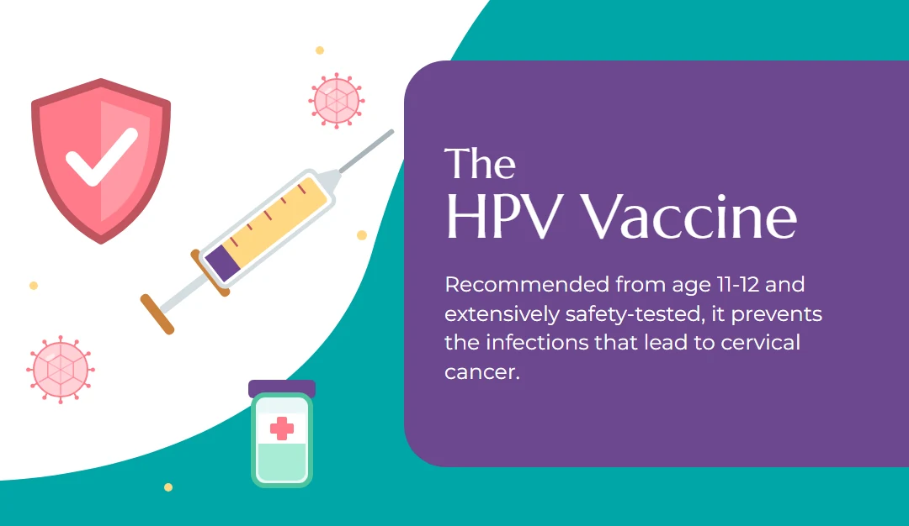
Gynecology icons created by juicy_fish - FlaticonLe vaccin contre le HPV
Le vaccin contre le HPV est l'un des outils les plus efficaces pour prévenir les infections qui conduisent au cancer du col de l'utérus. Il est recommandé dès 11-12 ans, a fait l'objet de nombreux tests de sécurité et agit en complément du dépistage régulier, et non à sa place.
En savoir plus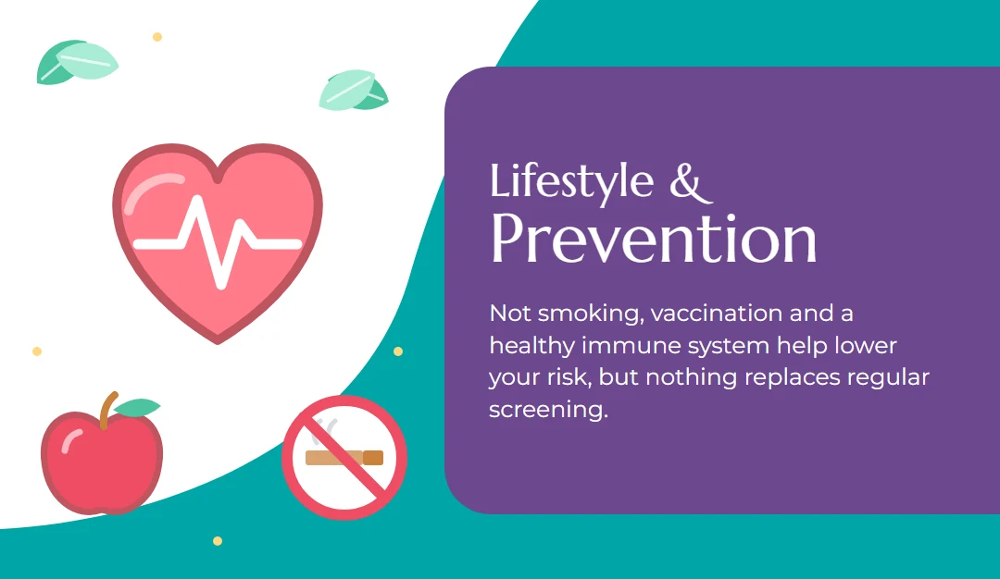
Gynecology icons created by juicy_fish - FlaticonMode de vie et prévention
Ne pas fumer, se faire vacciner et avoir un système immunitaire en bonne santé contribuent à réduire votre risque, mais aucun choix de mode de vie ne remplace le dépistage régulier, qui reste le moyen le plus fiable de repérer précocement les anomalies.
En savoir plus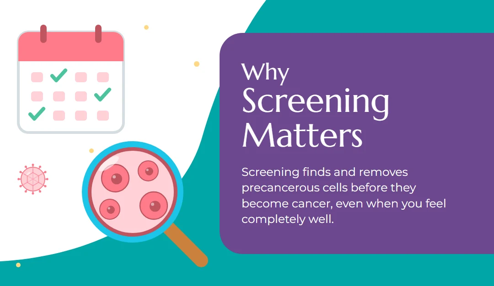
Gynecology icons created by juicy_fish - FlaticonPourquoi le dépistage est important
Le dépistage détecte et élimine les cellules précancéreuses avant qu'elles ne deviennent un cancer, en recherchant les premiers signes d'alerte chez des personnes qui se sentent en parfaite santé — ce qui le rend réellement préventif, et pas seulement diagnostique.
En savoir plus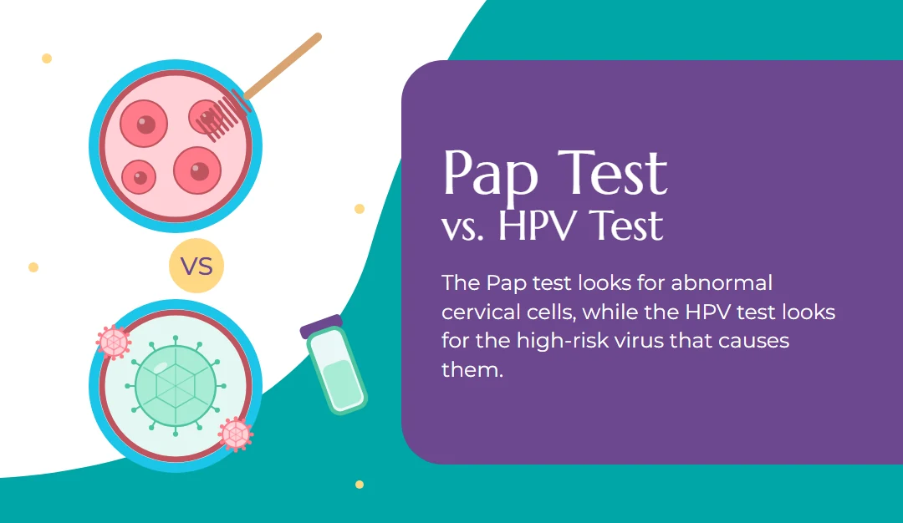
Gynecology icons created by juicy_fish - FlaticonFrottis ou test HPV
Le frottis examine les cellules du col à la recherche d'anomalies, tandis que le test HPV recherche le virus à haut risque qui les provoque. Le choix du test — et sa fréquence — dépend principalement de votre âge.
En savoir plus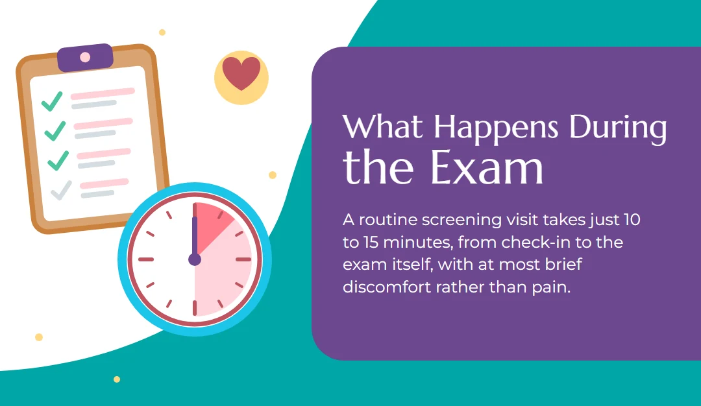
Gynecology icons created by juicy_fish - FlaticonQue se passe-t-il pendant l'examen
Un déroulé pas à pas d'une consultation de dépistage de routine, de l'accueil à l'examen lui-même. Elle dure généralement 10 à 15 minutes, avec tout au plus une brève gêne plutôt qu'une douleur.
En savoir plus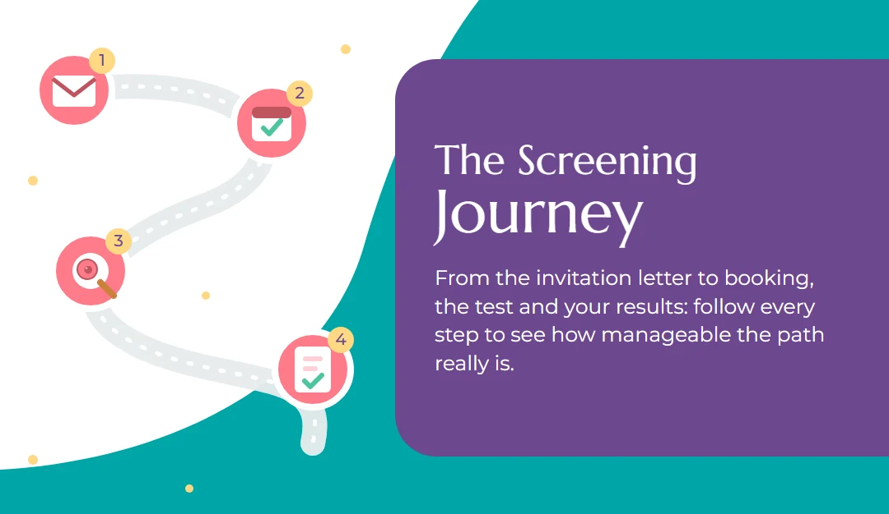
Gynecology icons created by juicy_fish - FlaticonLe parcours de dépistage
Suivez le parcours d'une femme tout au long du dépistage, de la lettre d'invitation à la prise de rendez-vous, au test lui-même puis à la réception des résultats, pour voir à quel point chaque étape est simple.
En savoir plus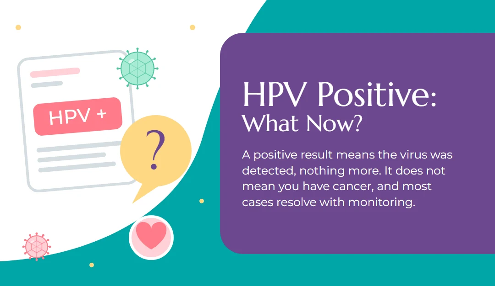
Gynecology icons created by juicy_fish - FlaticonHPV positif : et maintenant ?
Un résultat positif au test HPV signifie que le virus a été détecté, rien de plus. Cela ne veut pas dire que vous avez un cancer, et la plupart des résultats positifs disparaissent d'eux-mêmes avec un simple suivi.
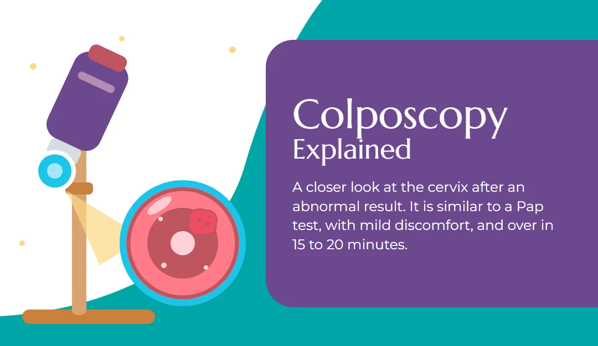
Gynecology icons created by juicy_fish - FlaticonLa colposcopie expliquée
Une colposcopie est simplement un examen plus approfondi du col de l'utérus après un résultat de dépistage anormal — semblable à un frottis, généralement avec une légère gêne, et terminée en 15 à 20 minutes.
En savoir plus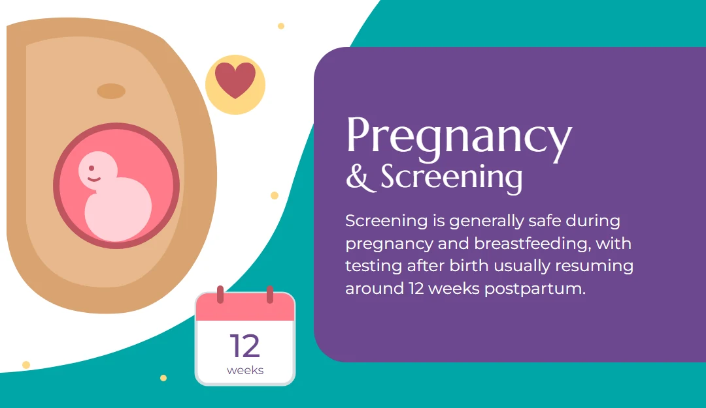
Gynecology icons created by juicy_fish - FlaticonGrossesse et dépistage
Le dépistage est généralement sûr pendant la grossesse et l'allaitement, et les tests reprennent habituellement environ 12 semaines après l'accouchement.
En savoir plusOutils interactifs
Essayez nos outils interactifs pour vous sentir mieux écoutée et guidée.
Évaluation des symptômes
Vous ne savez pas à quel point vos symptômes sont urgents ?
Vérificateur d'éligibilité au dépistage
Êtes-vous éligible au dépistage de routine du cancer du col de l'utérus ?
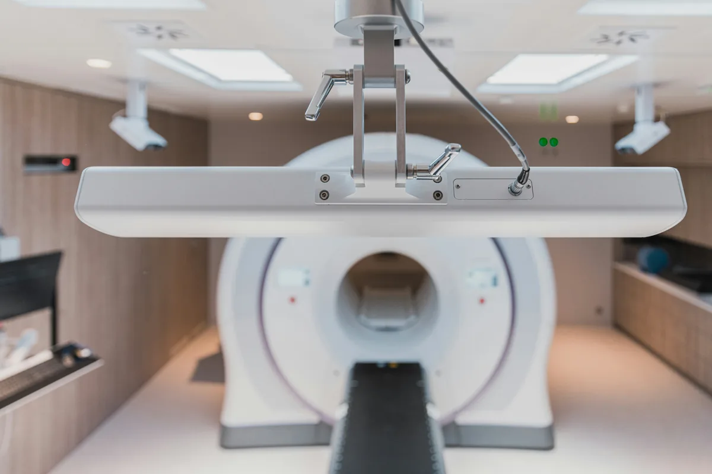
Services de santé
Si vous avez des questions sur le dépistage du cancer du col de l'utérus ou besoin d'aide pour accéder aux services de santé, contactez votre autorité sanitaire locale (ASL) ou notre équipe de recherche.
Autres ressources
Trouvez d'autres ressources utiles